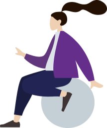

looking for more? design sprints, ideations and fledgling projects can be found here

I graduated from Rochester Institute of Technology in May 2020 with a B.S. in Human-Centered Computing.
My pursuit of UX had roots in psychology and user research; I branched out in web design and development internships, which then stemmed into doing freelance design, and eventually bloomed into UX contract work with a lovely company known as Innovia CoLabs, LLC 🡕.
In my free time, I enjoy writing calligraphy, hiking the trails, dabbling in code, creative writing, folding origami, and caring for my adorable rabbits.